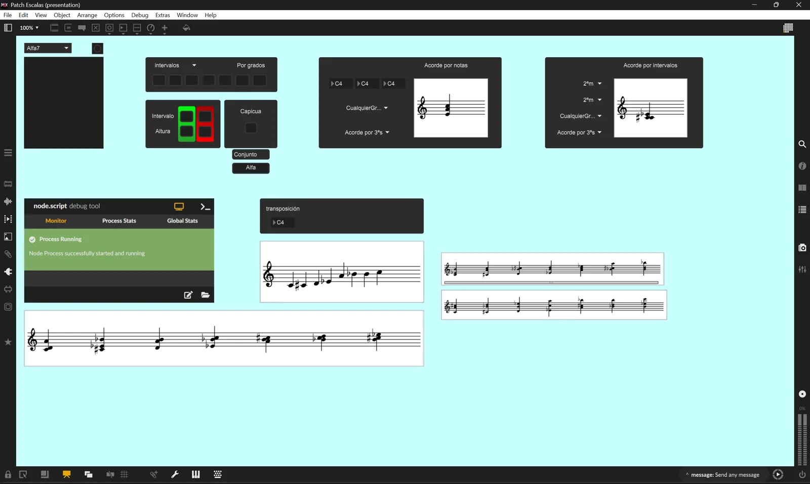

6P
Desarrollado para el Trabajo Fin de Máster Hacia una práctica instrumental digital en el aula de música (Universidad Internacional de Valencia, 2023).
Profesor del Conservatorio Superior de Música de Murcia desde el curso 2021/22. Ha impartido todas las asignaturas de tecnología del centro:
Actualmente: Composición Asistida por Ordenador I–IV, Tecnología del Sonido I–IV y Acústica.
Desarrollado para el Trabajo Fin de Máster Hacia una práctica instrumental digital en el aula de música (Universidad Internacional de Valencia, 2023).

Sin descarga: el patch depende de una base de datos en línea y no funciona de forma autónoma.
Proyecto con Luis Pérez de Tudela Gil, profesor del conservatorio profesional y miembro del colectivo Tecné, presentado en una charla dentro de la IV Semana de la Creación del CSMM (diciembre de 2022). La idea del sistema de escalas por tetracordos es suya; el diseño y la ejecución técnica, de Tirso. El programa construye cada escala como dos tetracordos más el intervalo que los une, genera todos los modos de cada combinación y elimina duplicados: el resultado es la enumeración completa de las escalas heptatónicas posibles en el temperamento igual, 66 conjuntos y 462 modos (16 de ellos capicúas, con los dos tetracordos iguales o en espejo). Cada escala se guarda con su interválica y los acordes por terceras, cuartas y quintas sobre cada grado, y la base de datos se consulta desde Max por características: qué escalas contienen un acorde, un intervalo o un conjunto dado.